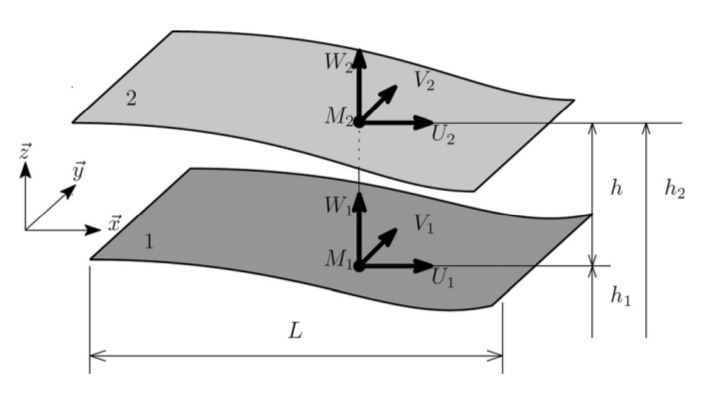
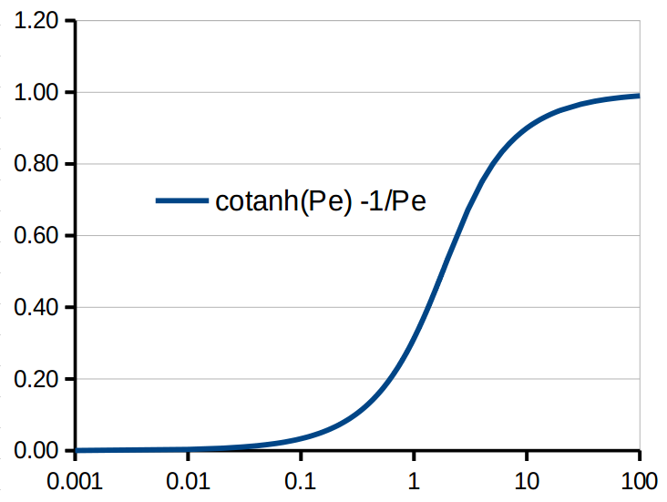
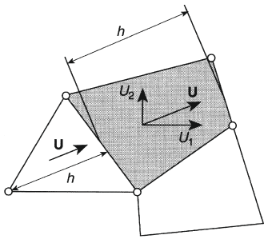
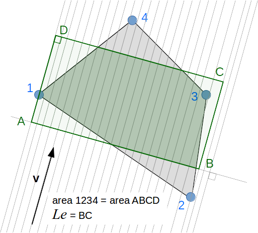

Subroutine to calculate the precomputed tables on a FE_FILM REYNOLDS EQUATION DISCRETIZATION
UPWINDING COEFFICIENTS



which can be adapted like this:
PRECOMPUTED INTEGRATION PARTS
| Type | Intent | Optional | Attributes | Name | ||
|---|---|---|---|---|---|---|
| type(FE_FILM), | intent(inout) | :: | fe_f | FE film |
||
| integer(kind=I4), | intent(in) | :: | e | element number |
subroutine compute_prc_tables_reynolds_supg(fe_f, e)
implicit none
type(FE_film), intent(inout) :: fe_f !! *FE film*
integer(kind=I4), intent(in ) :: e !! *element number*
integer(kind=I4) :: i, j, k, ng, nne
logical(kind=I4) :: gaz
real(kind=R8), dimension(MAX_NNE) :: tvx, tvy, th, tp, trho, tmu, tdrdp, tx, ty, tnix, tniy
real(kind=R8), dimension(MAX_NNG) :: wg, pg
real(kind=R8) :: c5, vc1
real(kind=R8) :: Pe_ux, Pe_uy, Pe_u, Pe_vx, Pe_vy, Pe_v, coeff_x, coeff_y, kk
real(kind=R8) :: sx, sy, alpha_u, alpha_ux, alpha_uy, alpha_vx, alpha_vy, alpha_v
real(kind=R8) :: dNidx_p, dNidy_p, Nid_rho_h, Ni_p, Ni_h, Ni_h3, Ni_vx, Ni_vy, Ni_mu, Ni_rho, Ni_inv_h, Ni_inv_mu
real(kind=R8) :: lu, wu, lv, wv
real(kind=R8) :: Ni_drhodp, gradh, gradhx, gradhy, gradp, gradpx, gradpy
real(kind=R8) :: drdp, h, mu, rho, u, ux, uy, v, vx, vy
real(kind=R8), dimension(MAX_NNE) :: vni4, vni4x, vni4y, vni4d
real(kind=R8), dimension(14) :: vcal
!============================================
!> {!src/inc_doc/Reynolds_discretization.md!}
!============================================
!============================================
!> {!src/inc_doc/upwinding_coefficients.md!}
!============================================
gaz = (fe_f%data_f%fl%fluid_type==GP)
nne = fe_f%m%el_t(e)
! values on the nodes
do i = 1, nne
j = fe_f%m%con(e, i)
tx(i) = fe_f%m%x(j) ! coordinates
ty(i) = fe_f%m%y(j)
tvx(i) = fe_f%vn (j, VX_N) ! velocities
tvy(i) = fe_f%vn (j, VY_N)
th(i) = fe_f%vn (j, H_N) ! heigth
tp(i) = fe_f%vn (j, P_N) ! pressure
trho(i) = fe_f%vn (j, RHO_N) ! density
tmu(i) = fe_f%vn (j, MU_N) ! viscosity
tdrdp(i) = fe_f%vn (j, DRHODP_N) ! viscosity derivative regarding P
enddo
c5 = dj4(ksi=0._R8, eta=0._R8, x=tx(1:nne), y=ty(1:nne))
call calc_ni4_xy_derivatives(ni4x = tnix(1:nne), &
ni4y = tniy(1:nne), &
ksi = 0._R8, &
eta = 0._R8, &
x = tx(1:nne), &
y = ty(1:nne), &
dj = c5)
! addition of the groove depth
th(1:nne) = th(1:nne) + fe_f%vc(e, HG_C)
ux = sum(tvx(1:nne))/nne
uy = sum(tvy(1:nne))/nne
u = sqrt( ux**2 + uy**2 )
h = sum(th (1:nne))/nne
drdp = sum(tdrdp(1:nne))/nne
mu = sum(tmu (1:nne))/nne
rho = sum(trho (1:nne))/nne
gradpx = sum( tp(1:nne)*tnix(1:nne) )
gradpy = sum( tp(1:nne)*tniy(1:nne) )
gradp = sqrt( gradpx**2 +gradpy**2 )
gradhx = sum( th(1:nne)*tnix(1:nne) )
gradhy = sum( th(1:nne)*tniy(1:nne) )
gradh = sqrt( gradhx**2 +gradhy**2 )
kk = 6*(drdp/rho)*mu*(1./h**2)
! Gauss points
ng = fe_f%prc%ng
pg(1:ng) = fe_f%prc%pg(1:ng)
wg(1:ng) = fe_f%prc%wg(1:ng)
if (gaz) then
v = -(h**2)/(6*mu)
vx = v*gradpx
vy = v*gradpy
v = sqrt( vx**2 + vy**2 )
call length_width_elem(spdx = ux, & ! in, speed u along x
spdy = uy, & ! in, speed u along y
x = tx, & ! in, element x coordinates
y = ty, & ! in, element y coordinates
length = lu, & ! out, length along u
width = wu) ! out, width
call length_width_elem(spdx = vx, & ! in, speed v along x
spdy = vy, & ! in, speed v along y
x = tx, & ! in, element x coordinates
y = ty, & ! in, element y coordinates
length = lv, & ! out, length along v
width = wv) ! out, width
! Peclet number related to u
Pe_ux = ux * (lu/2) * kk
Pe_uy = uy * (lu/2) * kk
Pe_u = sqrt(Pe_ux**2 +Pe_uy**2)
! Peclet number related to v
Pe_vx = vx * (wu/2) * kk
Pe_vy = vy * (wu/2) * kk
Pe_v = sqrt(Pe_vx**2 +Pe_vy**2)
alpha_ux = Pe_ux
alpha_uy = Pe_uy
alpha_u = Pe_u
alpha_v = (h/1.e6)*(u/1.e2)*(mu/1.e-5) * (wu/lu) * ( Pe_vx * (-uy) + Pe_vy * (+ux) )/u
alpha_vx = alpha_v * (-uy)/u
alpha_vy = alpha_v * (+ux)/u
alpha_v = sqrt(alpha_vx**2 +alpha_vy**2)
coeff_x = alpha_ux +alpha_vx ; sx = sign(1._R8, coeff_x) ; coeff_x = abs(coeff_x)
coeff_y = alpha_uy +alpha_vy ; sy = sign(1._R8, coeff_y) ; coeff_y = abs(coeff_y)
fe_f%vc(e, PEK_C) = sx*coeff_x
fe_f%vc(e, PEE_C) = sy*coeff_y
else
lu = maxval(tx(1:nne)) -minval(tx(1:nne))
wu = maxval(ty(1:nne)) -minval(ty(1:nne))
lv = lu * ux + wu * uy
Pe_ux = kk * (lv/2)
Pe_uy = 0._R8
if (abs(Pe_ux) < 1.e-2_R8) then
Pe_ux = Pe_ux / 3
else
Pe_ux = 1._R8 / (tanh(Pe_ux)) - 1._R8 / Pe_ux
endif
alpha_vx = 1._r8
alpha_vy = 1._r8
if (u > 0._r8) then
alpha_vx = lv * ux / (2 * (u ** 2))
alpha_vy = lv * uy / (2 * (u ** 2))
endif
fe_f%vc(e, Pek_c) = alpha_vx
fe_f%vc(e, Pee_c) = alpha_vy
endif
!=============================================
!> {!src/inc_doc/precomputed_integrations.md!}
!=============================================
do i = 1, ng
do j = 1, ng
vni4(1:nne) = fe_f%prc%vni4(1:nne, i, j)
! computation of the shape function derivatives
c5 = dj4(ksi=pg(i), eta=pg(j), x=tx(1:nne), y=ty(1:nne))
call calc_ni4_xy_derivatives(ni4x = vni4x(1:nne), &
ni4y = vni4y(1:nne), &
ksi = pg(i), &
eta = pg(j), &
x = tx(1:nne), &
y = ty(1:nne), &
dj = c5)
if (c5 < 0) stop 'compute_prc_tables_reynolds_supg: jacobian negative for elt'
if (gaz) then
do k = 1, nne
vni4d(k) = ni4_up_2d(k, pg(i), pg(j), (/coeff_x, coeff_y/), (/sx, sy/))
enddo
else
vni4d(1:nne) = vni4(1:nne) -alpha_vx*Pe_ux*vni4x(1:nne) -alpha_vy*Pe_ux*vni4y(1:nne)
endif
fe_f%prc%vni4x(1:nne, i, j) = vni4x(1:nne)
fe_f%prc%vni4y(1:nne, i, j) = vni4y(1:nne)
fe_f%prc%vni4d(1:nne, i, j) = vni4d(1:nne)
! computation of the coefficients for the Reynolds equation
vc1 = wg(i) * wg (j) * c5
dNidx_p = sum(vni4x(1:nne) * tp(1:nne))
dNidy_p = sum(vni4y(1:nne) * tp(1:nne))
Nid_rho_h = sum(vni4d(1:nne) * trho(1:nne) * th(1:nne))
Ni_p = sum( vni4(1:nne) * tp(1:nne))
Ni_h = sum( vni4(1:nne) * th(1:nne))
Ni_h3 = sum( vni4(1:nne) * th(1:nne)**3)
Ni_vx = sum( vni4(1:nne) * tvx(1:nne))
Ni_vy = sum( vni4(1:nne) * tvy(1:nne))
Ni_mu = sum( vni4(1:nne) * tmu(1:nne))
Ni_rho = sum( vni4(1:nne) * trho(1:nne))
Ni_inv_h = sum( vni4(1:nne) * (1._R8 / th(1:nne)))
Ni_inv_mu = sum( vni4(1:nne) * (1._R8 / tmu(1:nne)))
Ni_drhodp = sum( vni4(1:nne) * tdrdp(1:nne))
vcal( 1) = vc1
vcal( 2) = vc1 * Ni_h3 * Ni_rho * Ni_inv_mu
vcal( 3) = vc1 * 6*Ni_vx * Ni_h
vcal( 4) = vc1 * 6*Ni_vy * Ni_h
vcal( 5) = 0
vcal( 6) = vc1 * Ni_h3 * Ni_inv_mu * Ni_rho * dNidx_p
vcal( 7) = vc1 * Ni_h3 * Ni_inv_mu * Ni_rho * dNidy_p
vcal( 8) = vc1 * 6*Ni_vx * Nid_rho_h
vcal( 9) = vc1 * 6*Ni_vy * Nid_rho_h
vcal(10) = vc1 * Ni_h3 * Ni_inv_mu * dNidx_p
vcal(11) = vc1 * Ni_h3 * Ni_inv_mu * dNidy_p
vcal(12) = vc1 * Ni_p
vcal(13) = vc1 * (-dNidx_p * Ni_h/2 - Ni_mu * Ni_vx * Ni_inv_h)
vcal(14) = vc1 * (-dNidy_p * Ni_h/2 - Ni_mu * Ni_vy * Ni_inv_h)
fe_f%prc%vcal(1:14, i ,j) = vcal(1:14)
enddo
enddo
!=============================================
!> {!css/button.html!}
!=============================================
return
endsubroutine compute_prc_tables_reynolds_supg